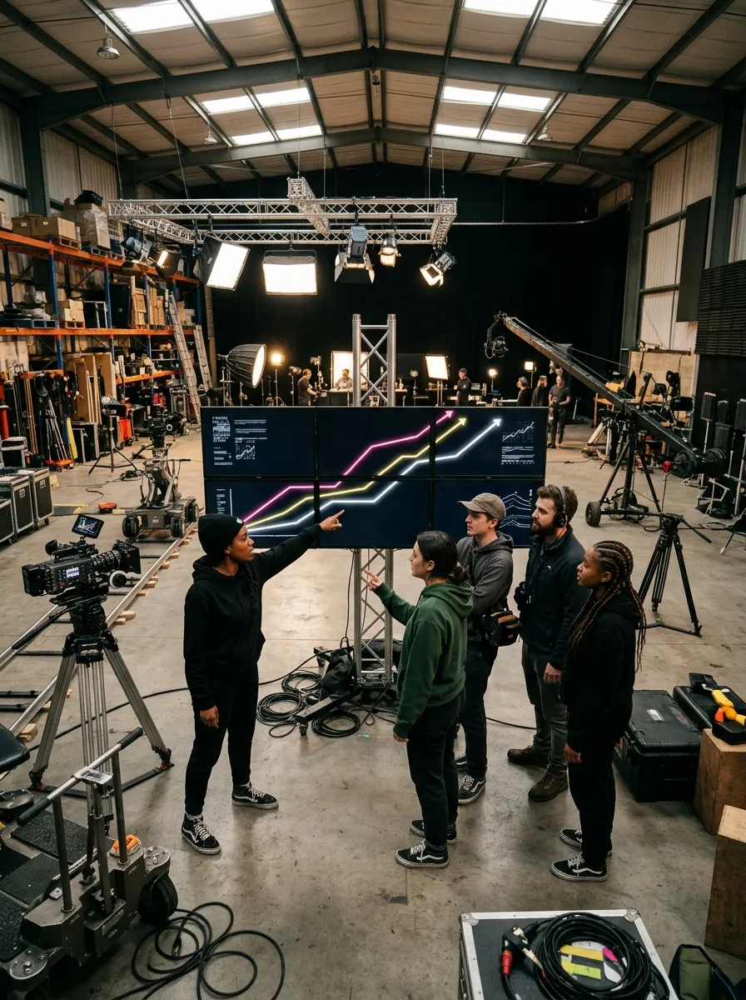
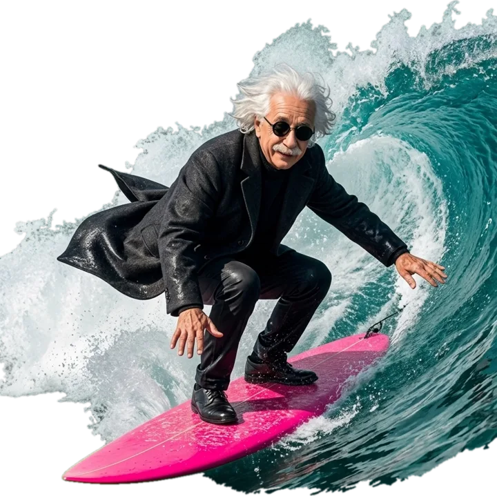
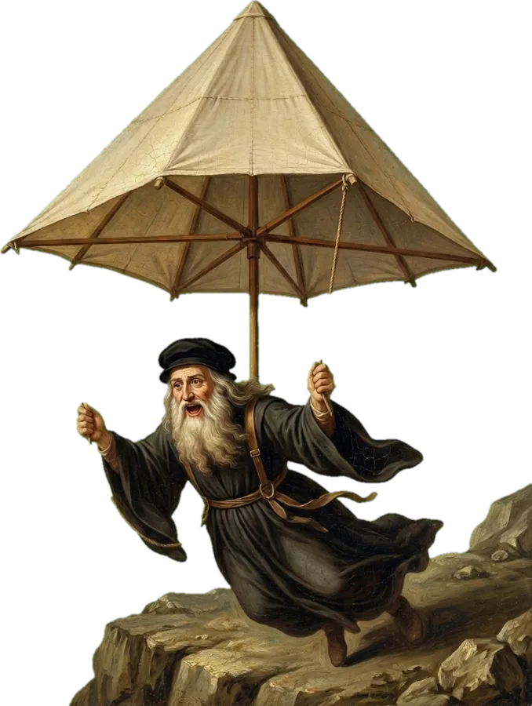
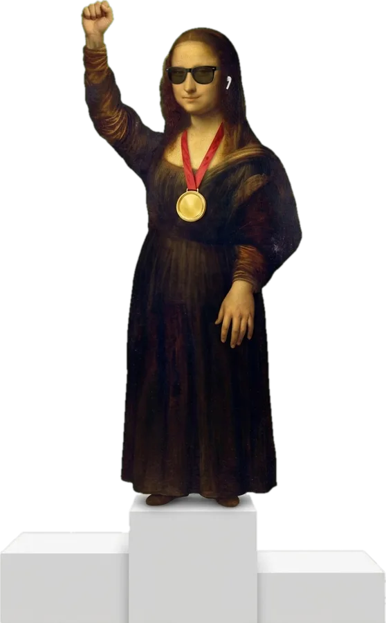
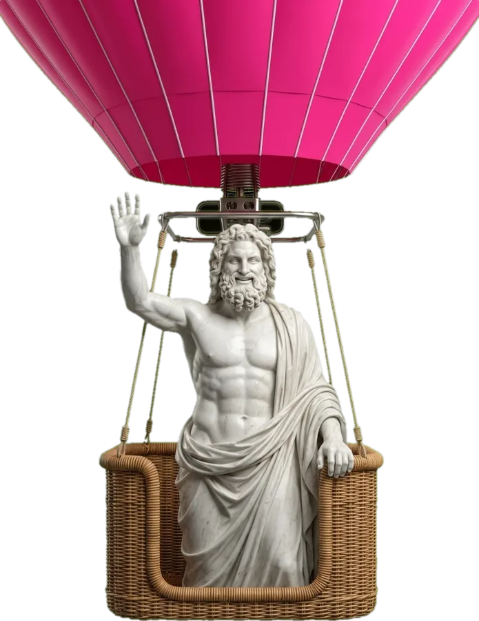
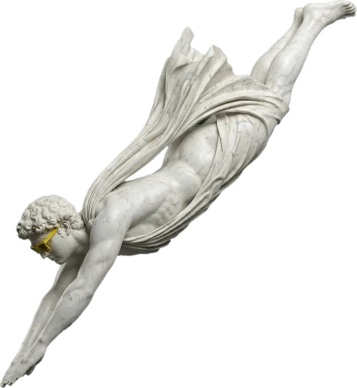
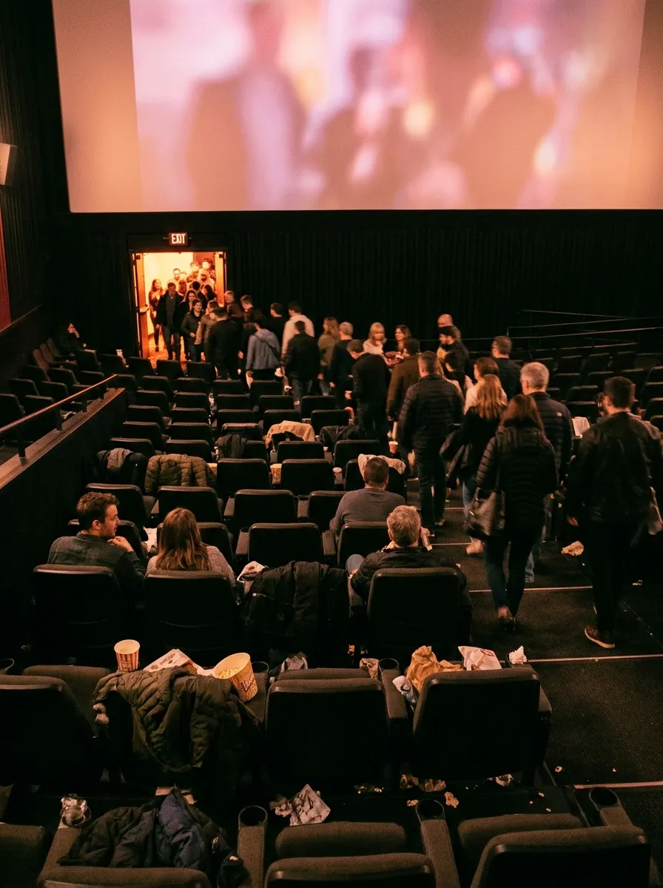

01 · Editor Pro
Edita tu reel sola
Subes los clips tal cual salen del celular y Cherry deja solo las tomas buenas. Corta las pausas, que es donde la gente desliza, y le pone color y sonido.
Lo que MrBeast le enseña a su equipo para que la gente no deje de ver sus videos, pasado a reels. Te lo prometimos en el video: aquí está completo, regla por regla.

Lo que mira su equipoEl manual dice que un video gana o pierde por tres números. En un reel son los mismos, con otro nombre:
Todas las reglas que siguen sirven para subir esos tres números. Entre más tiempo se queda la gente, más gente le muestra la red tu video.
«The first minute of each video is the most important minute of each video.»El primer minuto de cada video es el minuto más importante de cada video.
¿Por qué es bueno? Porque se quedaron casi 40 millones. ¿Y qué los hizo quedarse? Que ese minuto demostró que la portada no mintió: los que venían por esa promesa vieron enseguida que se iba a cumplir. Si la gente siente que la engañaste, se va.

En un reel nadie escoge tu video por la portada: tu portada es el primer cuadro, lo que se ve antes de que digas una palabra.

✓ te quedas«Stop telling people what they will be watching and start showing them.»Deja de decirle a la gente lo que va a ver y empieza a mostrárselo.
Si Leonardo abre diciendo «les cuento cómo diseñé un paracaídas», lo saltas. Si abre lanzándose de un acantilado, te quedas a ver si funciona.
«Anything that no other youtuber can do.»Cualquier cosa que ningún otro youtuber pueda hacer.
En uno de sus videos, a los treinta segundos, llega una casa entera colgada de una grúa. Es la regla más difícil de copiar y la razón por la que casi nadie consigue sus vistas.
Y aquí está lo difícil: tú no tienes una casa ni una grúa. Tu factor wow sale de lo que ya tienes:




«y eso es todo…»«Don't ever signal the end of the video… The video endings must always be abrupt to protect retention.»Nunca avises el final del video. Los finales siempre tienen que ser de golpe para cuidar la retención.
Si dices «y eso es todo» o «bueno, para terminar», la gente entiende que ya vio lo importante y se va antes del final. Por eso sus videos terminan de golpe. Y el manual pide otra cosa: que no haya momentos muertos.
«It's important to re-engage the viewer around this time because they could get bored.»Es importante volver a enganchar a la gente en este punto, porque se puede aburrir.
En sus videos largos eso pasa entre el minuto 3 y el 6, y ahí ponen lo más emocionante. En un reel, la mitad es el momento peligroso: guarda algo fuerte para ese punto, un giro, un dato o una imagen que no esperaban.
Subes los clips tal cual salen del celular y Cherry deja solo las tomas buenas. Corta las pausas, que es donde la gente desliza, y le pone color y sonido.
Los subtítulos caen justo cuando dices cada palabra. En el momento clave entra un zoom con su sonido, y los gráficos aparecen solos.
Escoges el día y la hora, y Cherry lo sube a Instagram. No tienes que estar ahí.
Lee las estadísticas de cada video y te dice qué mantener y qué cambiar en el próximo, paso a paso, para que cada video retenga más que el anterior.
Basado en «How to Succeed in MrBeast Production», el documento interno que se filtró en 2024. MrBeast no lo publicó oficialmente; las frases en inglés son del documento y la traducción y la adaptación a reels son nuestras. Foto de MrBeast: Tyren Redd, CC BY 4.0 (Wikimedia Commons); las ilustraciones son nuestras.